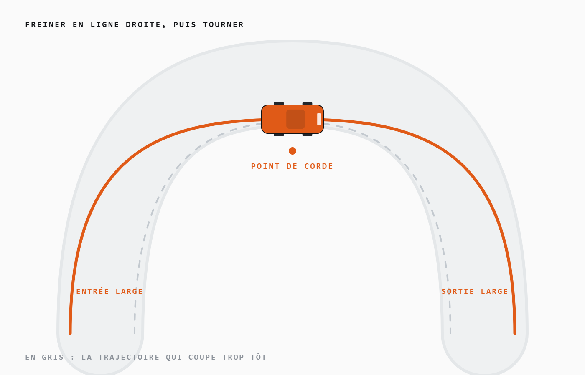

Piloter · technique
Réglages & pilotage
À cette échelle, l’inertie est quasi nulle et le grip vient du tissu. Résultat : ce n’est pas la puissance qui fait le chrono, c’est la propreté du geste. Voici ce qui fait vraiment gagner du temps.
- 4 gestes à travailler
- 6 symptômes diagnostiqués
- Exercice 10 tours à 50 %
Le principe central : en 1/76, une voiture de 5,8 cm n’a aucune masse pour rattraper une glissade. Il faut donc séparer les gestes — freiner en ligne droite, puis tourner — et corriger au bout des doigts plutôt qu’au grand mouvement. La régularité bat la vitesse brute à presque tous les coups.

04 gestes
Les quatre gestes qui comptent
Aucun ne demande de matériel, aucun ne coûte un euro. Ce sont les quatre seules choses à travailler pendant les premières semaines.
-
Freiner avant de tourner
Pousse la gâchette en ligne droite, relâche, puis tourne. Freiner et braquer en même temps fait décrocher l’avant : à 5 cm de long, il n’y a aucune masse pour rattraper la glissade.
-
Viser la sortie, pas la corde
Entre large, serre au point de corde, ressors large. Sur un tapis étroit, le pilote qui colle la corde à l’entrée perd systématiquement la relance.
-
Doser au bout des doigts
Quelques degrés de volant suffisent. Le réflexe le plus coûteux du débutant est le grand geste de correction, qui provoque le tête-à-queue qu’il essayait d’éviter.
-
Être régulier, pas rapide
Dix tours propres battent trois tours héroïques et deux sorties de piste. En course, le classement se joue presque toujours sur le nombre de fautes.
Dépannage
Ma voiture fait ça, pourquoi ?
| Symptôme | Ce qu’il faut vérifier, dans cet ordre |
|---|---|
| Elle tire d’un côté | ST.TRIM, puis la biellette de direction, puis un pneu encrassé d’un seul côté. |
| Elle avance seule à l’arrêt | TH.TRIM mal centré. Recale le neutre des gaz, radio allumée et voiture au sol. |
| Elle a perdu sa vitesse | Cheveux ou poussière dans la transmission, batterie fatiguée, pneus polis. Dans cet ordre : neuf fois sur dix, c’est le premier. |
| Elle survire à la relance | Baisse TH.LIM d’un cran et nettoie les pneus arrière. Le tissu poussiéreux glisse plus qu’on ne croit. |
| Elle décroche à l’avant | Tu freines en braquant. Sépare les deux gestes, puis réduis ST.D/R pour t’obliger à moins braquer. |
| Elle ne répond plus | Appairage perdu : deux contacteurs sous le châssis avec le trombone, puis redémarre la radio. |
L’exercice qui progresse le plus vite
Dix tours, limiteur à 50 %, sans toucher une bordure
Tant que tu ne réussis pas, ne monte pas la puissance. C’est frustrant deux soirées, puis tout se débloque : tes trajectoires deviennent lisibles, tu anticipes, et le passage à 100 % ne te surprend plus. La plupart des pilotes rapides du 1/76 ont fait exactement ça.